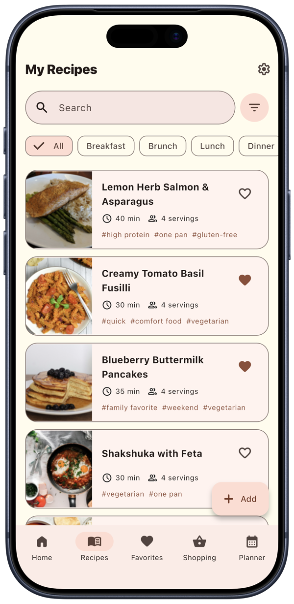
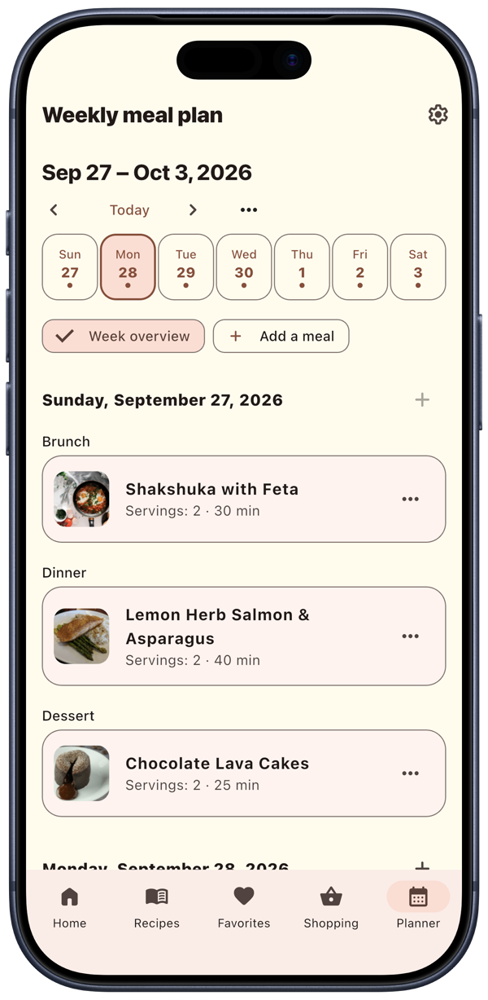
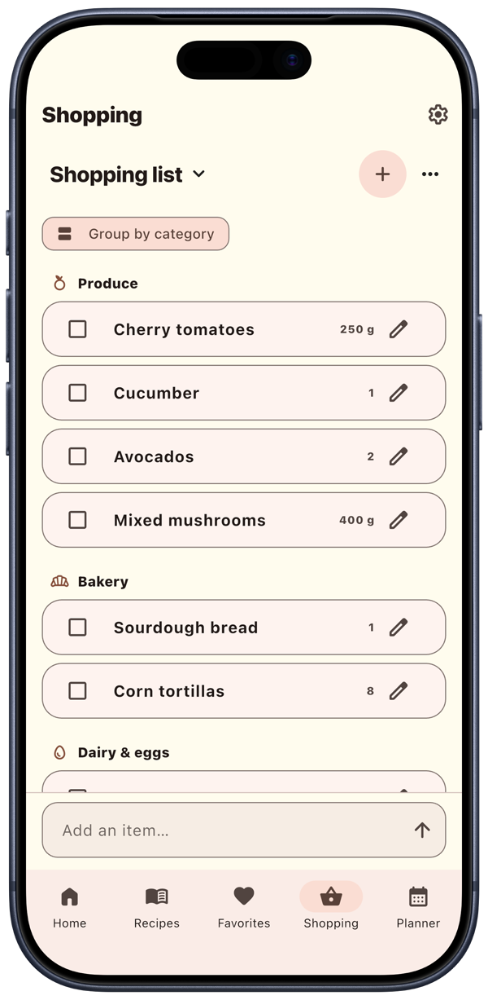
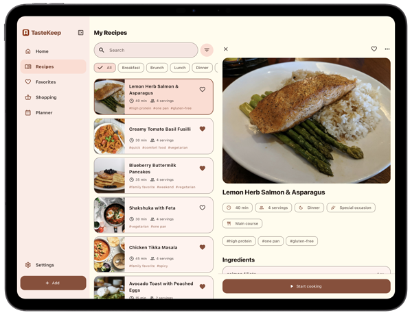
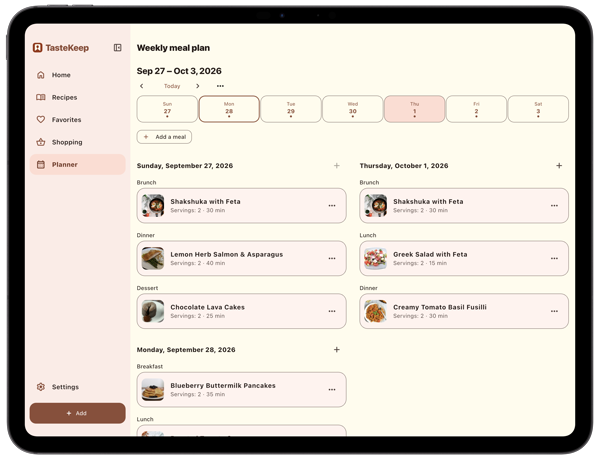
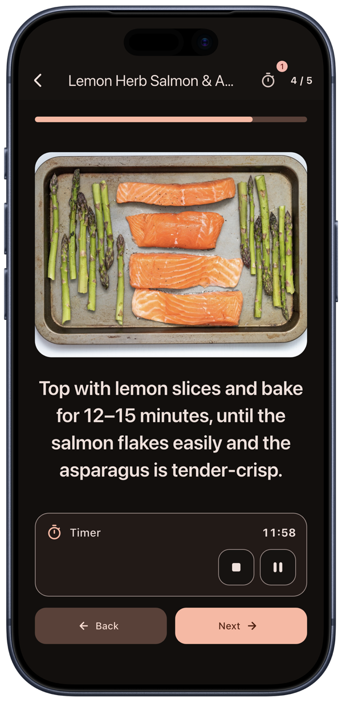

Keep
You save a recipe with photos, ingredients, step-by-step instructions, cooking time, servings, tags and the source. You search and filter by meal or dish type, mark favorites and open recent recipes in a tap.
Press kit
Your recipes, in one private book, for life. No account. No subscription.
TasteKeep is a private recipe book for iPhone and iPad. You keep family recipes with photos and steps, cook with timers that stay on the Lock Screen, plan the week and turn the plan into a shopping list sorted by aisle. There is no account and no tracking, and Pro is a one-time purchase.
For interviews and questions, email uladzislau.vyskvarka@gmail.com.





You save a recipe with photos, ingredients, step-by-step instructions, cooking time, servings, tags and the source. You search and filter by meal or dish type, mark favorites and open recent recipes in a tap.
Cooking mode shows one step at a time in large type, with an optional photo per step and a timer built into the step. The timer keeps running on the Lock Screen and in the Dynamic Island, so the phone can stay locked while your hands are busy.

The weekly planner comes with week templates. You add recipes to breakfast, lunch and dinner, reuse a favorite week and turn the plan into a shopping list.
TasteKeep builds shopping lists from recipes and plans, groups them by store aisle and adds up quantities. You can keep several lists at once, one per store, and share them.
Recipes live on your device and in your own iCloud. There is no sign-up and no ad. You choose when to back up and what to share.
30 September 2026
Most recipe apps come with a subscription and a feed of other people’s recipes. TasteKeep keeps your own recipes in your own book on your own devices, adds a planner and a shopping list when you need them, and charges one price for life.
Uladzislau Vyskvarka designs and builds TasteKeep alone. It started as a private family recipe book and grew into a planner and shopping companion.
You may use the screenshots and video in coverage of TasteKeep.
Reviewers can request a free TasteKeep Pro code.
38 MB: the icon, 16 screenshots, two videos and this text.
Free on the App Store for iPhone and iPad.